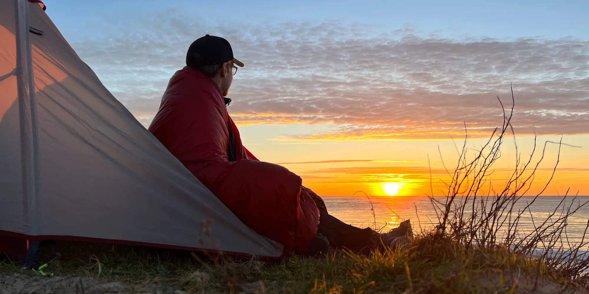
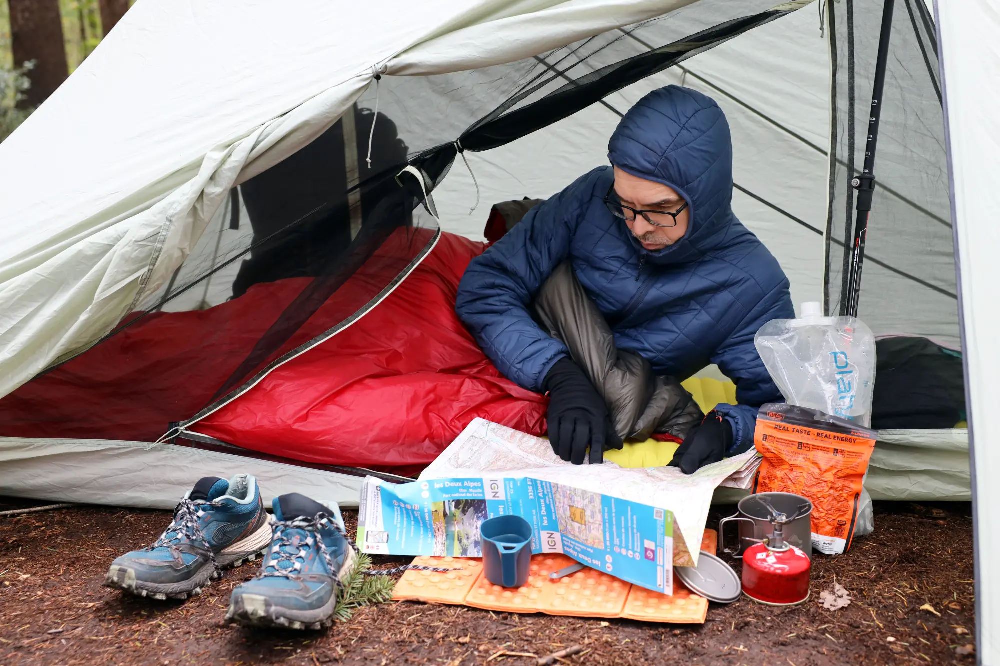

Quilt Oro
Couette de randonnée fabriquée en France
Partenaire privilégié de vos bivouacs, le Quilt Oro vous accompagne en grande randonnée, en week-end nature, en road trip, et bien plus encore. Ultraléger et compact, il trouve facilement sa place dans votre sac à dos.

Une nouvelle façon de dormir dehors
Confort
Dormir avec une couette de randonnée vous apporte un confort « comme à la maison ». Que vous dormiez sur le côté, sur le dos ou sur le ventre, vous n’avez pas de sensation d’enfermement et vous pouvez facilement réguler votre température. Finies les nuits en sueur et les nuits à greloter !
Polyvalence
Le Quilt Oro peut être utilisé ouvert comme une couverture, fermé aux pieds, attaché au matelas, fermé sur lui-même, serré autour du cou, ou tête recouverte. Dans des conditions plus extrêmes, il peut être utilisé en complément d’un sursac, d’un bivy, ou même d’un sac de couchage. Cette polyvalence lui permet de s’adapter à une large plage de températures.
Performance
Le Quilt Oro vous garde au chaud même dans des conditions humides et mouillées. Il possède une excellente résistance au vent et à l’eau ainsi qu’une sensation très douce au toucher. Son poids ultraléger (de 520 g à 750 g selon modèle) le rend idéal pour la marche ultralégère, l’autonomie, le thru-hiking, et le bikepacking.
Des matériaux techniques d'exception
Garnissage synthétique en Climashield® APEX
Le Quilt Oro est disponible avec une température limite de confort de -1 °C ou de 2 °C. Son garnissage synthétique en Climashield® APEX est composé de filaments continus de polyester hautement compressibles qui conservent leur forme initiale, ne se déchirent pas, ne s’agglutinent pas, ne se séparent pas, et offrent ainsi une efficacité thermique inégalée avec une légèreté accrue.
-1 °C
APEX 200
2 °C
APEX 167
Un traitement AquaBan® y est appliqué pour améliorer le passage de l’humidité hors de la couette tout en gardant la chaleur corporelle emprisonnée.
Tissu technique en taffetas de Nylon 10D
Le tissu ultraléger du Quilt Oro est un Nylon 10D respirant et déperlant qui offre une excellente résistance au vent et à l’eau et une bonne résistance à l’abrasion et aux tâches. Son tissage taffetas lui apporte une sensation très douce au toucher.
Le Quilt Oro se décline en 3 couleurs : vert, rouge, et bleu, avec intérieur gris anthracite. La couleur verte est la plus discrète pour se fondre dans l’environnement et observer la faune. Le rouge au contraire permet d’être vu et est plus facilement identifiable d’hélicoptère en cas d’accident. Quant au bleu, c’est sûrement la couleur qui représente le mieux une nuit de bivouac sous un ciel étoilé.
